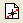
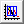
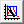

Erweiterter Digitalisierer
enhanced-digitizer
Zusammenfassung
Der erweiterte Digitalisierer unterstützt die automatische Verfolgung und die Digitalisierung in polaren und ternären Koordinatensystemen.
Origin-Version mind. erforderlich: Origin 2015 SR0
Was Sie lernen werden
Dieses Tutorial zeigt Ihnen, wie Sie:
- Achsen im Bild festlegen.
- Datenpunkte manuell und automatische erfassen.
- Achsen für polare und ternäre Koordinatensysteme festlegen.
Schritte
Bild importieren und Gitternetzlinien deaktivieren
- Klicken Sie auf die Schaltfläche Bild digitalisieren  in der Symbolleiste Standard.
- Navigieren Sie zu dem Ordner <Origin-Verzeichnis>\Samples\Import and Export und öffnen Sie TwoPeaks.bmp. Es gibt drei Liniendiagramme in dem Bild: die schwarze Zeichnung ist die Basislinie und die rote und blaue Zeichnung sind die Spektren.
- Im Dialog des Digitalisierers gibt es unten auf der Registerkarte Achsen Hinweise, die Sie schrittweise durch den Vorgang führen.
- Wählen Sie Bild: Kartesische Gitternetzlinien entfernen, um die Gitternetzlinien zu entfernen.
Sie können im Menü auch Bild: Drehen und Bild: Hintergrund löschen, um das Bild zu drehen und Hintergrundrauschen und Farbfüllungen zu löschen.
Achsen bearbeiten
Vor dem Erfassen von Datenpunkten müssen Sie die Achsen auf dem Bild einrichten, so dass eine Referenz zum Berechnen der XY-Koordinaten der Datenpunkte entsteht, die später erfasst werden.
- Klicken Sie auf die Schaltfläche Achsen bearbeiten
 bzw. stellen Sie sicher, dass sie angeklickt wurde.
bzw. stellen Sie sicher, dass sie angeklickt wurde.
- Es werden vier Linien angezeigt, die das Bild umrahmen. Ziehen Sie an jeder Linie, so dass sie jeweils an einer Stelle angezeigt werden, deren Achsenwerte Sie kennen, und geben Sie den Achsenwert in der entsprechenden Zeile im Dialog Digitalisierer ein.
Verwenden Sie die Schaltfläche Zoomen und Schwenken  auf der Symbolleiste Hilfsmittel oder halten Sie A gedrückt und verwenden Sie das Mausrad, um das Bild zu zoomen und auf ihm zu schwenken. Verfeinern Sie dann die Einstellung der Linienposition. Drücken Sie Strg+W, um die ursprüngliche Bildgröße wiederherzustellen.
auf der Symbolleiste Hilfsmittel oder halten Sie A gedrückt und verwenden Sie das Mausrad, um das Bild zu zoomen und auf ihm zu schwenken. Verfeinern Sie dann die Einstellung der Linienposition. Drücken Sie Strg+W, um die ursprüngliche Bildgröße wiederherzustellen.
- Nach dem Bearbeiten der Achsen können Sie mit der rechten Maustaste klicken und die Achseneinstellungen speichern, um sie bei ähnlichen Bildern wieder verwenden zu können.
Datenpunkte erfassen
Neben der Methode Datenpunkte manuell auswählen enthält der erweiterte Digitalisierer vier automatische Digitalisierungsmethoden, um die Datenpunkte zu erfassen. Sie befinden sich im Menü Digitalisieren und haben entsprechende Schaltflächen.
| Name |
Symbol |
Funktion |
| Punkte manuell auswählen |
|
Klicken Sie doppelt auf jeden Punkt, den Sie als Datenpunkt erfassen möchten. |
| Automatische Linienverfolgung nach Punkten |
 |
Klicken Sie auf eine Kurve in dem Bild. Die Datenpunkte werden automatisch entlang der Kurve erfasst. |
| Automatische Punktauswahl nach Gitternetzlinien |
|
Ziehen Sie ein Rechteck für den gewünschten Bereich im Bild auf, und die Datenpunkte werden an den Stellen erfasst, an denen sich die Gitternetzlinien im Rechteck mit der Bildkurve schneiden. |
| Bereich der autom. Verfolgung |
 |
Dies ist eine Mischung der beiden vorherigen Methoden. Ziehen Sie ein Rechteck auf dem gewünschten Bereich des Bilds auf. Die Datenpunkte werden automatisch entlang der Kurve erfasst. |
| Begrenzter Bereich der automatischen Verfolgung |
 |
Diese Methode ähnelt der Schaltfläche Bereich der autom. Verfolgung mit Ausnahme der Tatsache, dass die Punkte nur innerhalb des ausgewählten Bereichs erstellt werden. |
Punkte manuell auswählen
Wählen Sie manuell einige Punkte auf der roten Linie aus.
- Klicken Sie auf die Schaltfläche Punkte manuell auswählen.
- Klicken Sie doppelt auf die rote Kurve, um einen Punkt auszuwählen.
Das Vergrößerungsfenster auf der Registerkarte Daten des Dialogs Digitalisierer bietet eine vergrößerte Ansicht von der Stelle, an der sich der Cursor befindet. Sie können auch das Hilfsmittel Zoomen und Schwenken verwenden, das im Abschnitt Achsen bearbeiten erwähnt wird, um im Bild selbst zu zoomen und hin und her zu schwenken und die Punkte genauer auszuwählen.
- Wählen Sie einige Punkte mehr aus und klicken Sie auf die Schaltfläche Fertig. Die Anzahl der Punkte auf Linie 1 der Registerkarte Daten zeigt, wie viele Punkte für Linie 1 erfasst wurden.
Wenn Sie einen erfassten Punkt verschieben oder löschen möchten, klicken Sie doppelt auf den erfassten Punkt in dem Bild, um ihn auszuwählen. Verwenden Sie die Pfeiltasten auf der Tastatur, um den Punkt zu verschieben, oder drücken Sie die Taste Entfernen, um ihn zu entfernen.

Sie können auf die Schaltfläche Punkte manuell auswählen klicken, um mehr Punkte für Linie 1 auszuwählen.
�
Automatische Linienverfolgung nach Punkten
Es können mehrere Digitalisierungsmethoden auf der gleichen Linie verwendet werden, solange die Linie auf der Registerkarte Daten des Dialogs Digitalisierer markiert ist. Wählen Sie mehr rote Punkte für Linie 1 mit Hilfe der Methode Automatische Linienverfolgung nach Punkten aus.
- Klicken Sie auf die Schaltfläche Autom. Linienverfolgung nach Punkten.
- Klicken Sie doppelt auf rote Punkte links und rechts von dem Peak. Jedes Mal, wenn Sie doppelt auf einen Punkt klicken, sucht Origin automatisch weitere Punkte entlang der Kurve. Klicken Sie auf die Schaltfläche Fertig.
- Auf der roten Linie werden insgesamt 122 Punkte erfasst.
- Klicken Sie auf die Schaltfläche Zu Daten gehen
 , um die Ergebnisse in einem Arbeitsblatt zu sehen.
, um die Ergebnisse in einem Arbeitsblatt zu sehen.
Automatische Punktauswahl nach Gitternetzlinien
Als nächstes verwenden Sie die Methode Automatische Auswahl nach Gitternetzlinien, um die schwarze Basislinie zu digitalisieren.
- Aktivieren Sie das Fenster Bild.
- Klicken Sie auf die Schaltfläche Neue Linie
 . Die Registerkarte Daten fängt eine neue Zeile für Linie 2 an.
. Die Registerkarte Daten fängt eine neue Zeile für Linie 2 an.
Hinweis: Alle Zeichnungen in diesem Bild verwenden die gleiche XY-Achse, so dass Sie die Achsen nicht erneut bearbeiten müssen. Falls Sie über Bilder mit mehreren Achsen verfügen, können Sie für jede neue Linie der Daten eine neue Achse festlegen.
- Wählen Sie die Schaltfläche Autom. Punktauswahl nach Gitternetzlinien.
- Klicken und ziehen Sie, um ein Rechteck auf einem Teil der schwarzen Basislinie aufzuziehen, wie unten gezeigt:

Einige Punkte auf der roten und blauen Linie werden ebenfalls erfasst.
- Um unerwünschte Punkte zu entfernen, klicken Sie auf die Schaltfläche Punkte löschen .
- Ziehen Sie ein Rechteck über den unerwünschten Punkten auf und lassen Sie die Maustaste los, um sie zu löschen.
Mit dieser Methode werden nur 57 Punkte erfasst.
- Wenn Sie mit dem Ergebnis nicht zufrieden sind, klicken Sie auf die Schaltfläche Linie löschen , um Linie 2 auf der Registerkarte Daten des Dialogs Digitalisierer zu löschen, und klicken Sie auf die Schaltfläche Neue Linie , um erneut zu beginnen.
Sie können das Menü Einstellungen: Digitalisierungseinstellungen verwenden, um die Dichte des Gitternetzes benutzerdefiniert anzupassen.
Bereich der automatischen Verfolgung/Begrenzter Bereich der automatischen Verfolgung
Verwenden Sie diese zwei Methoden, um die blaue Linie zu digitalisieren.
- Klicken Sie auf die Schaltfläche Neue Linie .
- Klicken Sie auf die Schaltfläche Bereich der autom. Verfolgung .
- Klicken Sie und ziehen Sie ein Recht über einen Teil der blauen Kurve auf. Es werden automatisch Punkte entlang der blauen Kurve jenseits des Rechtecks erstellt.
- Wählen Sie die Schaltfläche Begrenzter Bereich der autom. Verfolgung .
- Klicken Sie und ziehen Sie ein Recht über einen Teil der blauen Kurve auf. Automatisch werden nur Punkte innerhalb des von Ihnen aufgezogenen Rechtecks erstellt. Anders als bei der Methode Automatische Punktauswahl nach Gitternetzlinien erstellt die Methode Begrenzter Bereich der autom. Verfolgung mehr Punkte als die Punkte, die an den Kurvenschnittpunkten mit den Gitternetzlinien entstehen würden.
- Klicken Sie auf die Schaltfläche Punkte neu ordnen
 , um die erfassten Punkte in eine Reihenfolge zu bringen.
, um die erfassten Punkte in eine Reihenfolge zu bringen.
- Klicken Sie auf die Schaltfläche Beschriftung festlegen
 .
.
- Klicken Sie auf die Peakspitze der blauen Linie und drücken Sie die Taste Enter.
- Geben Sie Blauer Peak in den Dialog ein, um eine Beschriftung zu dem Peak der blauen Linie hinzuzufügen.
- Um eine weitere Beschriftung zu dem Peak der digitalisierten roten Linie hinzuzufügen, klicken Sie erneut auf die Schaltfläche Beschriftung festlegen, um den Cursor von der ersten zu lösen.
- Wählen Sie Linie 1, um digitalisierte rote Punkte auf dem Bild zu zeigen. Wiederholen Sie den gleichen Prozess. Geben Sie dieses Mal die Beschriftung Roter Peak ein.
- Wählen Sie die Schaltfläche Zu Daten gehen . Sie können sehen, dass die Beschriftungen in den entsprechenden Beschriftungszeilen hinzugefügt wurden.
- Klicken Sie bei aktivem Bildfenster auf die Schaltfläche Zu Diagramm gehen
 .
.
Alle Kurven, die sich aus den ausgewählten Punkten ergeben, werden in einem Diagrammfenster gezeigt.

- Sie können das Projekt mit dem Digitalisierer darin speichern. Wenn Sie das Projekt in Zukunft öffnen, gibt es eine Schaltfläche für den Digitalisierer im Bild. Um mit der Digitalisierung fortzufahren, klicken Sie einfach auf sie.

Achsen für polare und ternäre Diagramme festlegen
Der folgende Abschnitt erläutert, wie Sie Achsen für Bilder mit polaren oder ternären Koordinatensystemen mit Hilfe des erweiterten Digitalisierers definieren. Sobald die Achsen definiert sind, können die gleichen Methoden zum Digitalisieren des Bilds verwendet werden, wie oben beschrieben.
Polare Koordinaten
- Klicken Sie auf die Schaltfläche Importieren
 im Dialog Digitalisierer.
im Dialog Digitalisierer.
- Navigieren Sie zum Ordner <Origin-Installationsverzeichnis>\Samples\Import and Export und wählen Sie PolarCoordinate.bmp.
Die Datenzeichnungen in diesem Bild befinden sich in einem polaren Koordinatensystem.
- Standardmäßig verwendet der Digitalisierer das kartesische Koordinatensystem. Wählen Sie Achsen: Polare Koordinaten, um den Dialog Einstellungen der polaren Koordinaten zu öffnen.
- Übernehmen Sie die Standardausrichtung und Theta-Einheit und klicken Sie auf OK. Im Bild werden zwei Linienobjekte mit Ankerpunkten gezeigt.
Um Achsen für polare Koordinaten festzulegen, müssen Sie sicherstellen, das jedes Linienobjekt der gleichen Radiuslinie folgt, d.h. P1 & P2 oder P3 & P4 müssen im gleichen Winkel zueinander stehen.
- Ziehen Sie die Ankerpunkte von jeder Linie zu bekannten Positionen. Hinweis: Sie können die Leertaste drücken, um den Cursor zu vergrößern, so dass es einfacher wird, die gewünschte Position zu finden.
- Geben Sie die entsprechenden Werte für Theta und Radius auf der Registerkarte Achsen des Digitalisierers ein.
Ternäre Koordinaten
- Klicken Sie auf die Schaltfläche Importieren im Dialog Digitalisierer.
- Navigieren Sie zum Ordner <Origin-Installationsverzeichnis>\Samples\Import and Export und wählen Sie TernaryCoordinate.bmp. Die Datenzeichnungen in diesem Bild befinden sich in einem ternären Koordinatensystem.
- Wählen Sie Achsen: Ternäre Koordinaten, um den Dialog Einstellungen der ternären Koordinaten zu öffnen.
- Legen Sie die Achsenausrichtung und den Bereich der Variablen (d.h., ob das ternäre Diagramm auf 0 - 1 oder 0 - 100 normiert ist) fest. Übernehmen Sie für dieses Beispiel die Standardeinstellungen und klicken Sie auf die Schaltfläche OK. Drei Ankerpunkte werden zu dem Bild hinzugefügt.
- Ziehen Sie diese drei Punkte zu den Vertizes des ternären Diagramms.
- Wie bei der Steuerung der Ankerpunkte von polaren Koordinaten wird die Zeile der ausgewählten Ankerpunkte im Diagramm auf der Registerkarte Achsen markiert:
- Die Achsenwerte von jedem Punkt sind jeweils X Y Z. Die XYZ-Werte von P1 im ternären Bild sollten 0 0 1 sein, da P1 am Ende der Z-Achse liegt. Entsprechend befinden sich P2 und P3 am Ende der X-Achse und der Y-Achse, also sollten die XYZ-Werte 1 0 0 bzw. 0 1 0 sein. Logischerweise können P1, P2 und P3 nicht die gleichen Werte sein.